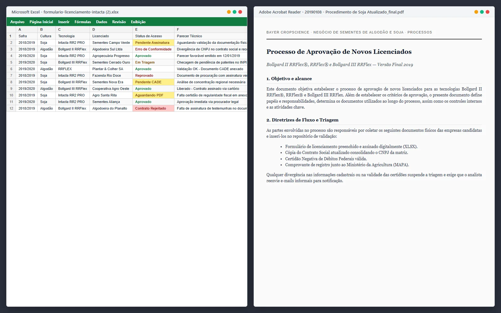

- Product Designer
- Henrico Amaral
- UX Researcher
- Maria Antonieta Santos
- Empresa
- MaxxiData
- Cliente
- Bayer
- Período
- Dezembro 2021 — Março 2022
- Duração
- 4 meses
- Tipo
- Plataforma interna de licenciamento
- Plataforma
- Web · Sistema interno
- Escopo
- Discovery · Arquitetura da informação · UX/UI · Prototipação
Quando o domínio é técnico e o risco é regulatório, clareza da informação é uma exigência operacional.
A validação de tecnologias agrícolas depende de leitura cuidadosa de dados técnicos.
Especialistas analisam desempenho por cultura, comportamento regional, resultados de testes e histórico de safras antes de recomendar o uso de uma tecnologia.
Esse processo envolve especialistas agronômicos, equipes comerciais, gestão técnica e áreas institucionais, cada uma com sua perspectiva e seus próprios registros.
A interpretação dependia da capacidade individual de reunir informação suficiente.
O sistema anterior não falhava por falta de dados. Falhava por falta de estrutura.
Especialistas tinham acesso à informação necessária, mas não conseguiam acompanhar o contexto completo da análise dentro de um único fluxo.
A decisão dependia de comparar dados técnicos, consultar documentos e registrar pareceres em ambientes diferentes.
Antes · Fragmentação
Planilhas de comparaçãoRelatórios técnicosFormulários de validaçãoDocumentos institucionaisContexto fragmentadoDepois · Visão única
A análise precisava carregar sua própria justificativa.
O gargalo era montar o contexto antes de interpretar o cenário.
Dados técnicos relevantes estavam distribuídos entre ferramentas sem conexão entre si.
O registro das decisões acontecia fora do ambiente de análise, quebrando a continuidade do processo.
A decisão técnica precisava permanecer ligada ao seu contexto.
A investigação dos artefatos mostrou que o maior esforço não estava na interpretação dos dados, mas na montagem do contexto necessário para interpretar o cenário.
Continuidade do dossiê
Manter empresa, documentos, análises e pareceres no mesmo processo.
Comparação técnica
Permitir contraste entre culturas, regiões, períodos e tecnologias.
Gates de decisão
Organizar avanço, complementação ou reprovação documentada.
Responsabilidade por etapa
Deixar claro quem analisa, quem valida e quem registra a decisão.
Auditabilidade
Preservar justificativas, documentos e histórico técnico.
O processo de licenciamento como eixo da decisão.
A decisão estrutural foi organizar o sistema em torno do processo de licenciamento. A partir dele, o usuário acompanha documentos, análises, pareceres, pendências, contrato e histórico.
Parte da validação continuou fora da plataforma.
Consultas externas, validações institucionais e assinatura legal permaneceram dependentes de processos fora do núcleo. A plataforma organizava o dossiê e a justificativa; não substituía todas as decisões ou responsabilidades do processo de licenciamento.
Heterogeneidade dos dados
Integrar múltiplos sistemas sem perder granularidade.
Variabilidade técnica
Acomodar diferenças entre culturas e regiões.
Profundidade sem simplificação
Manter dados completos sem sacrificar legibilidade.
Auditabilidade institucional
Registrar decisões no mesmo ambiente da análise.
Telas para analisar, validar e registrar.
A solução conectou a leitura dos dados ao fluxo de pareceres, decisões condicionadas e auditoria documental.


A sequência visual acompanha o processo de licenciamento desde o material legado até a aprovação condicionada e o parecer final.



Impacto: o licenciamento ganhou continuidade entre análise, parecer e auditoria.
O impacto comprovável está na estrutura do processo: a plataforma conecta proponente, documentação, triagem, análises, pareceres, contrato e auditoria dentro de um dossiê contínuo de decisão.
Proponente, documentação, triagem, análises, parecer, gates, contrato e auditoria passaram a compor a mesma trilha de licenciamento.
Dados da cultura, análise comparativa, fluxo de validação e documentação institucional estruturam a análise como processo contínuo.
Engenharia, especialistas agronômicos, comercial, gestão técnica e pesquisa passaram a orbitar a mesma estrutura de decisão.
O registro da decisão passa a acontecer no mesmo ambiente da análise, reduzindo ruptura entre interpretação técnica e validação institucional.
Especialistas precisam de profundidade com continuidade.
A principal decisão foi respeitar a profundidade do domínio sem transformar a interface em um depósito de dados. O valor está em fazer histórico, comparações e decisões encadeadas aparecerem como partes do mesmo processo institucional.